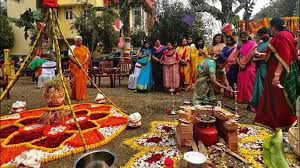

CITIES AND PLACES
Chennai
- Marina Beach: One of the longest beaches in the world, famous for its stunning sunrises and vibrant atmosphere.
- Fort St. George: A historic fort that houses a museum showcasing Chennai's colonial history.
- Kapaleeshwarar Temple: A beautiful Dravidian-style temple dedicated to Lord Shiva, known for its intricate architecture.

- Besant Nagar Beach: A serene beach known for its relaxed atmosphere and local eateries.
- Theosophical Society: A tranquil garden and library, perfect for those interested in philosophy and spirituality.
- Chennai Snake Park: A popular attraction featuring various species of snakes and reptiles.
Coimbatore
- Marudamalai Temple: A popular hilltop temple dedicated to Lord Murugan, offering stunning views of the city.
- Perur Pateeswarar Temple: An ancient temple known for its intricate architecture and vibrant festivals.
- VOC Park and Zoo: A well-maintained park and zoo, perfect for family outings and children's activities.

- Brookefields Mall: A large shopping mall featuring a variety of shops, restaurants, and entertainment options.
- Kovai Kutralam Falls: A beautiful waterfall located just outside the city, popular for picnics and nature walks.
- Gass Forest Museum: A unique museum showcasing the flora and fauna of the region, along with various exhibits on forestry.
Madurai
- Meenakshi Amman Temple: An iconic temple dedicated to Goddess Meenakshi, known for its stunning architecture and towering gopurams.
- Tirumalai Nayakkar Palace: A historic palace with a blend of Indo-Saracenic architecture, famous for its grand courtyard.
- Thirupparankundram Murugan Temple: An ancient temple dedicated to Lord Murugan, situated on a hilltop with breathtaking views.

- Gandhi Museum: A museum dedicated to Mahatma Gandhi, showcasing artifacts and exhibits related to the Indian independence movement.
- Vaigai River: A scenic river ideal for leisurely walks and boat rides, offering picturesque views of the city.
- Puthu Mandapam: A historic market area known for its unique architecture and local handicrafts.
Tiruchirappalli
- Rockfort Temple: A historic temple situated atop a rock, offering stunning views of the city and intricate carvings.
- Sri Ranganathaswamy Temple: A famous temple dedicated to Lord Ranganatha, known for its grand architecture and rituals.
- Jambukeswarar Temple: A significant Shiva temple, famous for its water sanctum and unique architecture.

- Government Museum: A museum showcasing artifacts, sculptures, and historical exhibits related to the region.
- Thiruvanaikoil Temple: A sacred temple known for its beautiful architecture and serene surroundings.
- Trichy Plaza: A popular shopping and entertainment complex offering various brands and eateries.
Chidambaram
- Nataraja Temple: A famous temple dedicated to Lord Shiva, known for its stunning architecture and cultural significance.
- Pichavaram Mangrove Forest: A beautiful mangrove forest offering boating and stunning views of nature.
- Chidambaram Palace: A historical palace that showcases the rich heritage of the region.

- Vaikuntha Perumal Temple: An ancient temple known for its intricate carvings and architectural brilliance.
- Sithanavasal Cave: A historical site featuring ancient rock-cut caves and beautiful frescoes.
- Chidambaram Beach: A serene beach perfect for relaxing and enjoying the coastal scenery.
Festivals and Cultural Events
Pongal
- Overview: Pongal is a multi-day Hindu harvest festival celebrated mainly in Tamil Nadu. It marks the beginning of the sun's six-month long journey northwards.
- Significance: The festival is a way to thank the Sun God for a good harvest and involves various rituals, including cooking the traditional dish of Pongal.
- Cultural Events: Celebrations include kolam (rice flour art), traditional music and dance, and various community activities.

- Celebration Activities: Families gather to prepare special dishes, perform puja, and decorate their homes.
- Community Feasts: The festival promotes unity, with large community gatherings and shared meals.
- Traditional Games: Various folk games and competitions are held, enhancing the festive spirit.
Natyanjali Dance Festival
The Natyanjali Dance Festival is a renowned celebration of classical dance held annually in Tamil Nadu, particularly at the famous Nataraja Temple in Chidambaram. This festival is dedicated to Lord Nataraja, the cosmic dancer, and attracts dancers from across the country who perform various styles of classical dance.

- Duration: Typically held during the full moon day in February or March.
- Highlights: Performances by renowned dancers, workshops, and cultural discussions.
- Significance: The festival promotes the rich heritage of Indian classical dance and fosters cultural exchange.
Adventure and Nature Activities
Trekking in Tamil Nadu
- Nilgiri Hills: Known for its lush greenery and scenic landscapes, ideal for trekking and nature walks.
- Anamalai Tiger Reserve: Offers thrilling trekking opportunities amidst diverse wildlife and dense forests.
- Meghamalai: A beautiful destination with trails that lead through tea estates and breathtaking viewpoints.

- Yercaud: Known as the "Jewel of the South," it features numerous trekking trails with stunning views.
- Kodai Kanal: Offers a range of trekking routes through pine forests and rolling hills, perfect for nature lovers.
- Agasthyamalai: A UNESCO World Heritage site, it's ideal for trekkers looking for a unique experience with diverse flora and fauna.
Wildlife Sanctuaries in Tamil Nadu
- Mudumalai National Park: Nestled in the Nilgiri Hills, this sanctuary is home to diverse wildlife, including elephants, tigers, and leopards.
- Anamalai Tiger Reserve: A protected area known for its rich biodiversity and the famous Western Ghats, offering a chance to spot various big cats and exotic birds.
- Kudremukh National Park: Famous for its stunning landscapes, this park is a haven for trekkers and nature enthusiasts, with opportunities to see diverse flora and fauna.

- Guindy National Park: Located near Chennai, this urban national park is home to several species of wildlife and is ideal for a quick escape into nature.
- Indira Gandhi Wildlife Sanctuary: Situated in the Anamalai Hills, this sanctuary is known for its picturesque landscapes and diverse animal species.
- Srivilliputhur Grizzled Squirrel Wildlife Sanctuary: A protected area dedicated to conserving the endangered grizzled giant squirrel, along with other wildlife.